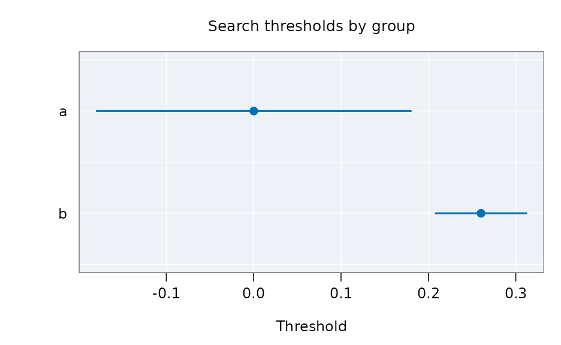
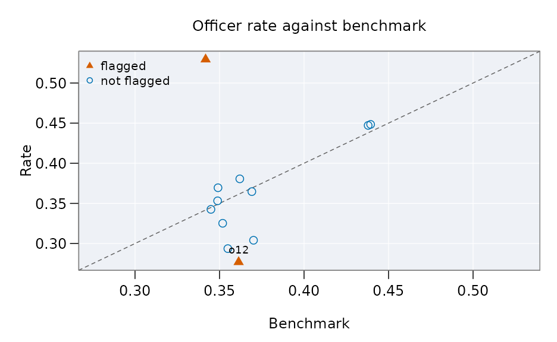
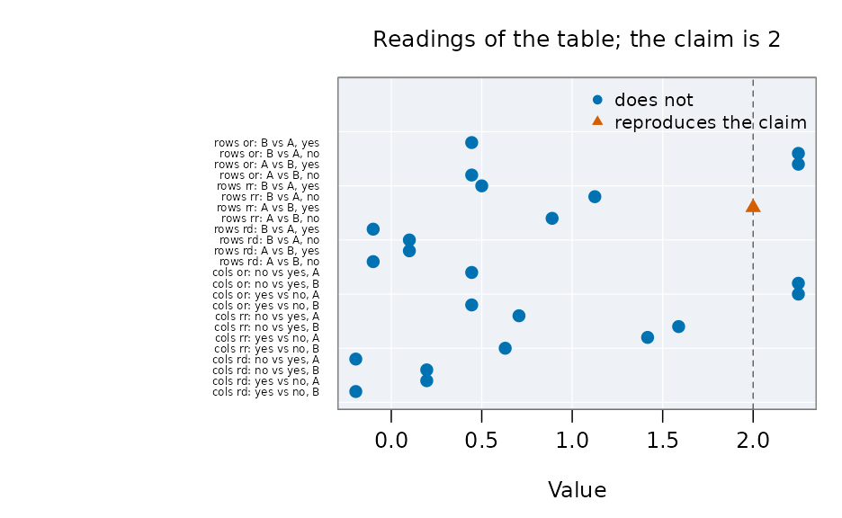

Disparities, benchmarks and checks of a reported number
Source:vignettes/disparities-and-checks.Rmd
disparities-and-checks.RmdTests of disparity in stops and outcomes, and checks that a published ratio or table says what it is taken to say.
Each section is one help page: what the function is for, the example
of its help page as it runs, and the plot of its result where the
package draws one. ?name gives the arguments and the value
in full.
Disparities
Veil-of-darkness test
vodtst(): Compares each group’s share of stops made in
daylight, when a driver’s race can be seen, with its share in darkness,
when it cannot. The ratio of the two odds against a reference group is
the factor by which visibility changes that group’s chance of being
stopped; 1 means no change.
vodtst(day = c(white = 600, black = 400),
night = c(white = 700, black = 300))
#> group ref shday shnight ratio sign
#> 1 white TRUE 0.6 0.7 1.000000 -1
#> 2 black FALSE 0.4 0.3 1.555556 1
# one table of groups by day and night
stops <- data.frame(day = c(600, 400), night = c(700, 300),
row.names = c("white", "black"))
vodtst(stops)
#> group ref shday shnight ratio sign
#> 1 white TRUE 0.6 0.7 1.000000 -1
#> 2 black FALSE 0.4 0.3 1.555556 1Risks behind an odds ratio
orrisk(): An odds ratio is not a relative risk: it lies
further from 1, and by more the more common the outcome. Given the odds
ratio, the overall rate of the outcome and the share exposed, this
returns the two risks and the relative risk they imply. See
proof("orrisk").
orrisk(or = 3, rate = 0.4, share = 0.5)
#> exposed unexposed rr or
#> 0.5282202 0.2717798 1.9435596 3.0000000Outcome test
outtst(): The stop rate and the hit rate of a group
searched whenever the chance of guilt exceeds a threshold. Hit rates
compare averages, not thresholds: two groups held to the same threshold
can show different hit rates, and a group held to a lower threshold can
show the higher one (infra-marginality). See
proof("outtst").
Tests of discrimination in searches: hit rates, thresholds, rank order
thrtst(): Asks whether the police search people of one
group on less evidence than people of another. Three tests read the same
counts of stops, searches and successful searches (“hits”, contraband
found):
# stops, searches and hits of two groups in four areas
d <- data.frame(
grp = rep(c("a", "b"), 4), area = rep(1:4, each = 2),
stops = c(1200, 800, 900, 1100, 1500, 700, 1000, 1000),
srch = c(60, 70, 50, 95, 80, 66, 52, 90),
hits = c(24, 18, 19, 25, 30, 17, 21, 24)
)
thrtst(d$stops, d$srch, d$hits, d$grp, area = d$area)
#> thrtst: reference a
#> hit rates (chi-square 10.25 on 1 df, p 0.00137):
#> group stops srch hits srate hrate diff se z p
#> a 4600 242 94 0.05260870 0.3884298 0.0000000 NA NA NA
#> b 3600 321 84 0.08916667 0.2616822 -0.1267475 0.03979326 -3.18515 0.00144679
#> thresholds (likelihood ratio 0.03214 on 1 df, p 0.858):
#> group thr se lo hi diff dse z
#> a 0.0001513307 0.09175977 -0.1796945 0.1799972 0.00000 NA NA
#> b 0.2601813432 0.02657569 0.2080940 0.3122687 0.26003 0.09569318 2.717331
#> p
#> NA
#> 0.00658108
# the rank-order test needs the officers' groups
thrtst(c(100, 100, 100, 100), c(10, 20, 30, 10), c(5, 5, 5, 5),
grp = c(1, 1, 2, 2), off = c("x", "y", "x", "y"))$rank
#> off1 off2 meas zmin zmax rej
#> 1 x y search -2.000000 3.651484 TRUE
#> 2 x y hit -1.936492 1.348400 FALSE
# the joint test of three officer groups
thrtst(rep(600, 9), c(72, 48, 60, 60, 72, 48, 48, 60, 72),
rep(c(36, 24, 30), 3), grp = rep(1:3, each = 3),
off = rep(c("a", "b", "c"), 3), rank = "joint")$rank
#> meas off rank rej
#> 1 search a NA TRUE
#> 2 search b NA TRUE
#> 3 search c NA TRUE
#> 4 hit a 1 FALSE
#> 5 hit b 3 FALSE
#> 6 hit c 2 FALSE
Internal benchmarking of officers
ibench(): Asks whether an officer stops more people of a
group (or searches, arrests, uses force more often) than other officers
do in the same circumstances. Officers work different places and hours,
so each officer’s stops are compared not with all other stops but with
the other officers’ stops weighted to look like this officer’s: the
propensity e(x) that a stop with circumstances
x (place, hour, day, reason) is this officer’s comes from a
logistic regression on x (over all stops), and each other
officer’s stop gets the weight e / (1 - e), the weights of
the effect on the treated (Ridgeway and MacDonald 2009). The benchmark
is the weighted share of the outcome among those stops, and the z
statistic compares the officer’s share with it, with the variance of a
proportion for the officer and, for the benchmark, that of a proportion
over its effective number of stops, (sum w)^2 / sum w^2. With many
officers some will stand out by chance: q is the false
discovery rate of Benjamini and Hochberg (1995) over the officers
tested, and flag marks those with q below
fdr.
set.seed(2)
n <- 3000
off <- sample(sprintf("o%02d", 1:12), n, TRUE)
night <- rbinom(n, 1, ifelse(off %in% c("o01", "o02"), 0.7, 0.3))
y <- rbinom(n, 1, plogis(-1 + night + 0.8 * (off == "o03")))
ibench(y, off, data.frame(night), minn = 50)
#> ibench: 12 officers, 12 tested; flagged at a false discovery rate of 0.05: 2
#> off n rate bench ess z p q flag
#> o01 252 0.4484127 0.4393818 1738.745 0.2694671 7.875702e-01 9.391220e-01 FALSE
#> o02 246 0.4471545 0.4379157 1725.956 0.2727291 7.850615e-01 9.391220e-01 FALSE
#> o03 255 0.5294118 0.3417565 2701.527 5.7630501 8.260725e-09 9.912870e-08 TRUE
#> o04 266 0.3646617 0.3691144 2733.526 -0.1439985 8.855016e-01 9.391220e-01 FALSE
#> o05 247 0.3805668 0.3619805 2740.723 0.5767080 5.641367e-01 9.391220e-01 FALSE
#> o06 273 0.3040293 0.3701072 2717.313 -2.2521013 2.431587e-02 9.726348e-02 FALSE
#> o07 246 0.3252033 0.3518533 2638.673 -0.8519623 3.942350e-01 9.391220e-01 FALSE
#> o08 235 0.3531915 0.3488650 2641.215 0.1330054 8.941891e-01 9.391220e-01 FALSE
#> o09 254 0.3425197 0.3449036 2577.094 -0.0763735 9.391220e-01 9.391220e-01 FALSE
#> o10 235 0.2936170 0.3549139 2651.348 -1.9692089 4.892911e-02 1.467873e-01 FALSE
#> o11 249 0.3694779 0.3490945 2646.200 0.6377712 5.236226e-01 9.391220e-01 FALSE
#> o12 242 0.2768595 0.3613048 2687.908 -2.7944882 5.198194e-03 3.118917e-02 TRUE
ibench(y, off, data.frame(night), minn = 50, dr = TRUE)$tab
#> off n rate bench ess z p q flag
#> 1 o01 252 0.4484127 0.4393818 1738.745 0.27653108 7.821402e-01 9.384964e-01 FALSE
#> 2 o02 246 0.4471545 0.4379157 1725.956 0.28607426 7.748212e-01 9.384964e-01 FALSE
#> 3 o03 255 0.5294118 0.3417565 2701.527 5.92119984 3.196012e-09 3.835214e-08 TRUE
#> 4 o04 266 0.3646617 0.3691144 2733.526 -0.14637442 8.836258e-01 9.384964e-01 FALSE
#> 5 o05 247 0.3805668 0.3619805 2740.723 0.58858288 5.561411e-01 9.384964e-01 FALSE
#> 6 o06 273 0.3040293 0.3701072 2717.313 -2.27360614 2.298968e-02 9.195871e-02 FALSE
#> 7 o07 246 0.3252033 0.3518533 2638.673 -0.86671658 3.860973e-01 9.266336e-01 FALSE
#> 8 o08 235 0.3531915 0.3488650 2641.215 0.13672962 8.912445e-01 9.384964e-01 FALSE
#> 9 o09 254 0.3425197 0.3449036 2577.094 -0.07715986 9.384964e-01 9.384964e-01 FALSE
#> 10 o10 235 0.2936170 0.3549139 2651.348 -2.01670530 4.372628e-02 1.311788e-01 FALSE
#> 11 o11 249 0.3694779 0.3490945 2646.200 0.65262224 5.139998e-01 9.384964e-01 FALSE
#> 12 o12 242 0.2768595 0.3613048 2687.908 -2.86006053 4.235602e-03 2.541361e-02 TRUE
res <- ibench(y, off, data.frame(night), minn = 50)
plot(res)
Benchmark decomposition of a disparity
dspbm(): Splits each group’s disparity in force per
resident, against a reference group, into a disparity in contact per
resident times a disparity in force per contact. The split is a product,
never a sum. See proof("dspbm").
Dyadic offending rates
dyadrt(): Offences by one group against another, as a
rate per member of the offending group and as a rate per offender-victim
pair exposed. The rate per offender rises with the size of the victim
group even when offenders choose victims at random; the rate per pair
does not. See proof("dyadrt").
Checks
Which labelling reproduces a reported contrast?
relchk(): A reported odds ratio, risk ratio or risk
difference depends on which group is the reference, which outcome is the
event and which margin of the table holds the groups.
relchk() recomputes the contrast from the table under every
such reading and says which ones reproduce the reported value: the
labelling the report states, another one, or none.
tab <- matrix(c(20, 10, 80, 90), 2,
dimnames = list(c("A", "B"), c("yes", "no")))
# 2.25 is the odds ratio of A against B for "yes"
relchk(tab, 2.25, ref = "B", event = "yes")
#> relchk: reported 2.25, to 2 decimals
#> claim: or, ref B, event yes
#> verdict: the claim holds
#> grp type group ref event value claim
#> rows or B A no 2.25 FALSE
#> rows or A B yes 2.25 TRUE
#> cols or no yes B 2.25 FALSE
#> cols or yes no A 2.25 FALSE
# 0.44 is the same contrast read with the reference group swapped
relchk(tab, 0.44, ref = "B", event = "yes")
#> relchk: reported 0.44, to 2 decimals
#> claim: or, ref B, event yes
#> verdict: only readings the claim does not allow match
#> grp type group ref event value claim
#> rows or B A yes 0.4444444 FALSE
#> rows or A B no 0.4444444 FALSE
#> cols or no yes A 0.4444444 FALSE
#> cols or yes no B 0.4444444 FALSE
# a risk ratio reported as an odds ratio
relchk(tab, 2.0, type = "or", digits = 1)
#> relchk: reported 2, to 1 decimal
#> claim: or
#> verdict: only readings the claim does not allow match
#> grp type group ref event value claim
#> rows rr A B yes 2 FALSE
Audit categorical inputs before an analysis
catchk(): Reports, for each variable, what the functions
of this package would make of it: its storage type, its levels and their
counts, missing values, unused levels, levels counted fewer than
nmin times, labels that differ only by case or white space,
a 0/1 or logical coding, integer codes that look like categories, value
labels (as haven makes) that do not match the values, and which level a
default would take as the reference, and why. Nothing is changed.
d <- data.frame(sex = c("Male", "male", "Female", "Female", NA),
custody = c(TRUE, FALSE, TRUE, TRUE, FALSE),
court = c(1L, 2L, 2L, 3L, 1L))
catchk(d, nmin = 2)
#> catchk: 3 variables, 2 with problems
#> var type nlev ref why
#> sex character 3 <NA> no order: state it
#> custody logical 2 FALSE logical: TRUE is the treatment
#> court integer 3 <NA> no order: state it
#> sex: 1 missing; seen fewer than 2 times: "Male", "male"; differ only by case or spaces: "Male", "male"
#> court: seen fewer than 2 times: "3"; numbers that look like category codes
catchk(factor(c("b", "a", "b"), levels = c("a", "b", "c")), ref = "b")
#> catchk: 1 variable, 1 with problems
#> var type nlev ref why
#> x factor 3 a factor: the first level
#> x: never seen: "c"; seen fewer than 5 times: "a", "b"; reference "b": seen fewer than nmin timesDeclare rules a table must satisfy, and check them
rul(), valrules(): rul()
declares one rule: a name, a function that says whether the data pass,
the column it reads (or the whole table), how serious a failure is and
the message to give. valrules() runs a list of rules on a
data frame and returns the ones that failed, with the rows that broke
them. The ready-made rules (ruleinset() and the others)
cover the usual checks, so that they are written once and not by
hand.
d <- data.frame(id = c(1, 2, 2, 4), age = c(34, -1, 51, NA),
charge = c("assault", "theft", "theft", "arson"))
r <- list(
rul("age_not_negative", function(v) is.na(v) | v >= 0, col = "age",
msg = "an age is negative"),
ruleuniq("id", sev = "fatal"),
rulenull("age"),
ruleinset("charge", c("assault", "theft", "drugs"))
)
v <- valrules(d, r)
v
#> valrules: 4 rules, 4 failed (1 fatal)
#> warning age_not_negative: an age is negative (1 of 4 rows); rows 2
#> fatal id_unique: Column 'id' has duplicate values (1 of 4 rows); rows 3
#> warning age_not_null: Column 'age' has missing values (1 of 4 rows); rows 4
#> warning charge_in_set: Column 'charge' has values outside the allowed set (1 of 4 rows); rows 4
v[["id_unique"]][["rows"]]
#> [1] 3
# a table that passes
length(valrules(d[1, ], r))
#> [1] 0
# a rule written as data
valrules(d, list(rule = "btw", col = "age", lo = 0, hi = 120))
#> valrules: 1 rules, 1 failed (0 fatal)
#> warning age_between: Column 'age' has values outside [0, 120] (1 of 4 rows); rows 2
try(rul("", function(v) TRUE))
#> Error : rul: `name` must be one non-empty string.Ready-made rules
ruleinset(), rulebtw(),
rulenull(), ruleuniq() and others: The checks
that account for most of what a table is asked: a value in a set, a
number in a range, no missing value, no repeated identifier, a pattern,
an order, an outlier, complete rows, distinct rows, a number of columns.
Each returns a rule for valrules(), as rul()
does.
d <- data.frame(year = c(2019, 2020, 2021, 2021),
n = c(410, 395, 9000, 402),
div = c("11", "14", "14", "5X"))
valrules(d, list(
rulebtw("year", 2000, 2026),
ruleincr("year", strict = TRUE),
rulemad("n", 5),
rulerx("div", "^[0-9]{2}$"),
ruledstn(c("year", "div")),
rulecolcnt(3),
rulecmpl()
))
#> valrules: 7 rules, 3 failed (0 fatal)
#> warning year_increasing: Column 'year' is not strictly increasing
#> warning n_within_mads: Column 'n' has values more than 5 MADs from its median (1 of 4 rows); rows 3
#> warning div_regex: Column 'div' has values not matching /^[0-9]{2}$/ (1 of 4 rows); rows 4
try(rulebtw("year", 2026, 2000))
#> Error : rulebtw: `lo` must not be above `hi`.Shares
Share of a total, in percent
shrs(): Expresses each count as a percentage of a total
(for example each division’s share of all stops, or each offence’s share
of all admissions), with a Wilson confidence interval. A share’s
denominator is the total of the same events, so shares over a complete
grouping sum to 100. Use a rate (such as grprr()) instead
when the denominator is a population; “40% of stops” and “40 stops per
1,000 residents” are different claims.
# simulated stops by division
stops <- data.frame(division = c("North", "South", "East"),
stops = c(412, 77, 3))
shrs(stops, stops, by = "division")
#> shrs: shares of 492 in percent, 95% Wilson intervals
#> division count total share lower upper
#> East 3 492 0.6097561 0.2075843 1.777215
#> North 412 492 83.7398374 80.2200225 86.736863
#> South 77 492 15.6504065 12.7074531 19.125597
shrs(stops, "stops", by = "division", total = 10000)
#> shrs: shares of 10000 in percent, 95% Wilson intervals
#> division count total share lower upper
#> East 3 10000 0.03 0.01020322 0.08817358
#> North 412 10000 4.12 3.74774662 4.52748907
#> South 77 10000 0.77 0.61657440 0.96123408
shrs(c(murder = 3, robbery = 7))
#> shrs: shares of 10 in percent, 95% Wilson intervals
#> label count total share lower upper
#> murder 3 10 30 10.77913 60.32219
#> robbery 7 10 70 39.67781 89.22087
try(shrs(c(5, 2), total = 4))
#> Error : shrs: a count is larger than the total, so these are not shares of it.